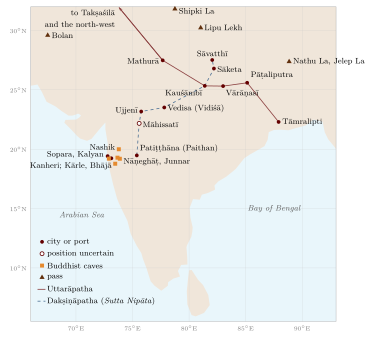

Chapter 8: Routes, Passes and Merchants¶
The geography that mattered most to many people in pre-modern India was the geography of routes: which roads were safe, where rivers could be crossed and in which season, where water and fodder could be found, which passes were open, and where goods could be bought and sold. This knowledge belonged above all to merchants, caravan leaders, boatmen, carriers and the officials who taxed them. It was rarely written down as such, but it can be reconstructed from texts, inscriptions, the distribution of coins and monuments, and the accounts of travellers (Neelis 2011; Ray 1986). This chapter follows the land and river routes; the sea routes and their monsoon calendar are described with the coasts in Chapter 11.
8.1 The Great Routes of the North and South¶
8.1.1 Uttarāpatha¶
In early Buddhist and Sanskrit texts, Uttarāpatha, “the northern road”, means both the north-west of the subcontinent (Gandhāra and the Punjab, the country of horses) and the route that led there from the Gangetic plain. That route ran from Takṣaśilā (Taxila) across the Punjab rivers to the Yamunā and then down the Gaṅgā valley through cities such as Mathurā, Kauśāmbī and Vārāṇasī to Pāṭaliputra and on to the port of Tāmralipti in Bengal (Figure 8.1). Branches led north-west through Puruṣapura (Peshawar) and the Kabul valley to Bactria and Central Asia, and north through the upper Indus valley.
The Mauryan state maintained this road. Greek writers drawing on Megasthenes describe a royal road from the north-west to Pāṭaliputra and officials who set up markers at regular intervals showing turnings and distances. Aśoka’s inscriptions are found at many points along major routes, and his Pillar Edict 7 says that he had banyan trees and mango groves planted, wells dug and drinking-places set up along the roads. Later rulers rebuilt and extended the road. Sher Shāh Sūr (r. 1540–45) rebuilt a long trunk road from Bengal to the Punjab with sarāys at regular intervals (Section 8.9). The Mughals maintained it and marked their roads with kos mīnārs, solid masonry pillars set at intervals of one kos, many of which still stand along the old road between Agra, Delhi and Lahore. The British, after rebuilding the road in the nineteenth century, called it the Grand Trunk Road. The name is colonial; the route is much older.

8.1.2 Dakṣiṇāpatha¶
Dakṣiṇāpatha, “the southern road”, came to mean the Deccan itself. A route list in the Pārāyanavagga of the Pali Sutta Nipāta follows the disciples of the teacher Bāvarī from Patiṭṭhāna (Paithan) on the Godāvarī northward through Māhissatī, Ujjenī (Ujjain), Vedisa (Vidiśā), Kosambī, Sāketa and Sāvatthī to the Buddha’s country—an early itinerary of the road between the Deccan and the Gangetic plain, drawn in Figure 8.1. Vidiśā and Ujjain, at the northern end of this road, were among the richest cities of early India, and the great stūpas of Sāñcī near Vidiśā were paid for in part by donations from merchants, guild members and lay families recorded in hundreds of short inscriptions.
Which Route Is Better? Kauṭilya’s Answer
The Arthaśāstra (7.12) records a debate about trade routes. Earlier teachers preferred the route towards the Himālaya, which brought elephants, horses, perfumes, ivory, skins, silver and gold. Kauṭilya disagrees: the southern route is better, because, apart from blankets, skins and horses, it yields more goods—conch shells, diamonds, gems, pearls and gold—and it passes through many mines and populous regions. He also compares land and water routes and prefers coastal shipping to the open sea as safer (Olivelle 2013). The passage shows that routes were compared by what they carried, not merely by distance.
8.2 Passes of the Western Ghats and the Deccan Caves¶
The Deccan plateau is separated from the western coast by the steep scarp of the Western Ghats. In the centuries around the beginning of the common era, under the Sātavāhanas and the Western Kṣatrapas, trade between the coastal ports (Sopara, Kalyan, Chaul) and the inland markets (Paithan, Ter, Junnar, Nashik) went up and down a small number of passes. Buddhist monastic caves were cut at the heads of these passes and along the routes: Kārle and Bhājā near the Bor Ghāṭ, Junnar near the Nāṇeghāṭ, Nashik, Kanheri near Sopara and Kalyan. Their inscriptions record gifts from merchants, guilds, bankers and foreign donors (Yavanas), showing that monasteries were part of the network of trade (Ray 1986). At the Nāṇeghāṭ pass, a cave contains the long inscription of the Sātavāhana queen Nāyanikā, recording Vedic sacrifices and gifts—a royal monument on a trade route.
8.3 The Northern Mountain Passes¶
8.3.1 The North-West¶
The mountain wall of the north-west is crossed by several passes. The Khyber (about 1,070 m) links the Peshawar valley with the Kabul river; the Bolan (roughly 1,800 m at its head) links the Kachhi plain of the lower Indus with Quetta and Kandahar; the Gomal and Kurram passes lie between them. These were the main routes between the subcontinent and Afghanistan, Iran and Central Asia for traders, pilgrims and armies. Horses, which did not breed well in most of India, were imported through them in large numbers throughout history, as well as by sea from Arabia and the Gulf.
8.3.2 The Upper Indus and the Karakoram¶
A more difficult route led from Gandhāra up the Indus gorge through Gilgit and over the Karakoram to the Tarim basin. Along the upper Indus near Chilas and Shatial, thousands of rock carvings and inscriptions in Kharoṣṭhī, Brāhmī, Sogdian, Chinese and Tibetan record the passage of merchants and pilgrims between the first and eighth centuries CE, including Sogdian traders from Central Asia (Neelis 2011). Faxian travelled this way in about 400 CE. Later, the route from Kashmir and Ladakh over the Karakoram Pass (Table 8.1) to Yarkand was used by caravans until the mid-twentieth century.
8.3.3 The Himalayan Passes¶
Further east, trade between India and Tibet crossed the Himalaya by passes that are open only in summer. Tibetan salt, wool and borax were exchanged for grain, sugar, cloth and metal goods, often by specialised trading communities of the high valleys such as the Bhotiyas of Kumaon and Garhwal, who moved with their flocks and goods between Tibetan marts and the foothills. Table 8.1 lists the principal passes.
| Pass | Approx. height | Route |
|---|---|---|
| Zoji La | about 3,500 m | Kashmir valley to Ladakh |
| Karakoram Pass | about 5,500 m | Ladakh to Yarkand (Xinjiang) |
| Shipki La | over 4,500 m | Kinnaur along the Sutlej to western Tibet |
| Rohtang | about 4,000 m | Kullu to Lahaul (bypassed by the Atal Tunnel since 2020) |
| Lipu Lekh | over 5,000 m | Kumaon to western Tibet (Kailāsa route) |
| Nathu La | about 4,300 m | Sikkim to the Chumbi valley; reopened for border trade in 2006 |
| Jelep La | about 4,300 m | Sikkim/Kalimpong to the Chumbi valley; main India–Lhasa trade route c. 1900 |
8.4 Rivers as Highways¶
The rivers of the Gangetic plain were the cheapest way of moving bulk goods. Boats carried grain, salt, cotton, stone and timber, and the large cities of the plain—Pāṭaliputra, Vārāṇasī, Prayāga, Kauśāmbī—stood on navigable rivers. The Arthaśāstra’s superintendent of shipping (nāvadhyakṣa, 2.28) supervises ferries, river and sea traffic and port towns, collects fees, and is responsible for the safety of travellers (Olivelle 2013). The Jātaka stories and the Mahābhārata describe merchants travelling by boat, and Faxian and Xuanzang both travelled on the Ganges.
At the mouth of the river system, Tāmralipti (Tamluk) in Bengal was the principal port for the sea routes to Sri Lanka and Southeast Asia from at least the Mauryan period: Faxian sailed from there to Sri Lanka, and Yijing landed there from Śrīvijaya. As the Ganges delta shifted eastward, the main ports moved too: to Saptagrām (Satgaon) in the later medieval period and then to Hugli and, in the colonial period, Calcutta.
8.5 The Desert Routes¶
The Thar desert separated Sindh from the Gangetic plain and Gujarat, but caravan routes crossed it, linking Multan, Jaisalmer, Bikaner, Jodhpur and the ports of Gujarat. Desert towns grew rich on the caravan trade, as the merchants’ mansions (havelīs) of Jaisalmer still show. Travel depended on knowledge of wells and on travelling at night.
The first story in the Pali Jātaka collection, the Apaṇṇaka Jātaka, tells of two caravans crossing a desert: one is deceived by demons into throwing away its water and perishes; the other, led by the future Buddha, keeps its water and survives. The second, the Vaṇṇupatha Jātaka, tells of a caravan crossing a sandy waste by night, guided by a “land pilot” (thalaniyyāmaka) who steers by the stars. Whatever their date, these stories reflect real techniques of desert travel.
Stepwells (vāv, bāolī) and tanks in Gujarat and Rajasthan provided water for towns and travellers. The Rani ki Vav at Patan, built in the eleventh century under the Caulukya (Solaṅkī) dynasty and now a World Heritage Site, is the most elaborate.
8.6 Carriers, Merchants and Guilds¶
8.6.1 The Caravan¶
The sārtha (caravan) and its leader, the sārthavāha, are familiar figures in Buddhist and Jain literature. The caravan leader decided routes and halting places, negotiated with rulers and tolls, and was responsible for the safety of those who travelled with him. Jain narrative literature describes merchants who invite all who wish to travel to join their caravan, providing food and protection.
In Mughal India much of the overland carrying trade was in the hands of the Banjārās, communities of carriers who moved grain, salt and other bulk goods on huge herds of pack-oxen, numbering in the tens of thousands for a single camp. Armies relied on them for supplies, and contemporaries described their movements as a kind of moving town. Irfan Habib has shown their central place in the economy of Mughal India (Habib 1990).
8.6.2 Guilds and Merchant Networks¶
Merchants were organised in guilds (śreṇī, nigama) from the early historical period; inscriptions at Sāñcī, Nashik and elsewhere record guild donations and endowments. In South India from the ninth century, merchant bodies such as the “Five Hundred of Ayyāvoḷe” (Aihole) and the Maṇigrāmam operated across the peninsula and overseas; a Tamil inscription of the Ayyāvoḷe body dated 1088 has been found at Barus in Sumatra. Jewish, Christian and Muslim merchants on the Malabar coast received privileges recorded in copper-plate grants, such as the Kollam plates of 849.
In later centuries Indian merchants worked across Asia. Multani and Punjabi Khatri merchants and bankers were established in Iran, Central Asia and as far as Astrakhan on the Volga in the seventeenth and eighteenth centuries (Levi 2002); Gujarati merchants traded throughout the western Indian Ocean; Chettiar bankers from Tamil Nadu financed trade and agriculture in Burma, Malaya and Ceylon in the colonial period. These networks were held together by kinship, caste and credit, and by bills of exchange (huṇḍī) that could be cashed in distant cities.
Scholarly Note: Merchants as Holders of Geographical Knowledge
Merchants needed to know prices, routes, seasons, the safety of roads and the policies of distant rulers. That knowledge circulated in letters, account books and conversation. Little of it survives in written form from before the seventeenth century, but its existence is evident from the way trade networks functioned. When European companies arrived, they depended on Indian brokers, bankers and pilots for exactly this kind of knowledge.
8.7 Salt, Horses and Grain¶
Three commodities show how the geography of production shaped routes.
Salt was produced in only a few places: by evaporation of sea water along the coasts, especially in Gujarat, Odisha and the Coromandel; from the salt lake of Sambhar in Rajasthan; and from the rock-salt deposits of the Salt Range in the Punjab. Every inland village needed it, so salt moved along almost every route, carried by specialised carriers such as the Banjārās. Its universal necessity also made it an object of taxation, from the Arthaśāstra’s superintendent of salt to the colonial salt monopoly against which Gandhi marched to Dandi in 1930.
Horses of good quality did not breed well in most of India and were imported, overland from Central Asia and Afghanistan through the north-western passes and by sea from Arabia and the Gulf to the ports of the west coast and the Coromandel. Marco Polo describes the great sums spent by the kings of Maʿbar on horses brought by sea; the Vijayanagara kings and the Deccan sultans competed for them; and the horse trade was a major source of revenue for the ports that handled it.
Grain moved over shorter distances by land, but in great quantities along the rivers and the coasts. Rice from Bengal and the Kāverī delta and wheat from the Punjab were shipped to deficit regions, and in times of famine the movement of grain became a matter of life and death, in which carriers, merchants and states all played a part.
8.8 Monks on the Road¶
Merchants were not the only regular travellers. Buddhist and Jain monks and nuns were enjoined to wander from place to place outside the rainy season, and their rules show careful attention to the conditions of travel. The Jain Ācārāṅga Sūtra regulates how a monk should walk (looking ahead so as not to harm living beings), when he may cross a river by boat or wade through shallow water, how he should behave on roads frequented by thieves or through the territories of hostile kings, and where he may stay. The Buddhist monastic code contains similar rules. Monasteries and caves along the trade routes—Sāñcī, the Western Ghats caves, the monasteries of Gandhāra and the upper Indus—served as halting places for monks and lay travellers alike, and monks often travelled with merchant caravans for safety (Neelis 2011; Ray 1986). Brahmin scholars, wandering ascetics of many orders, bards and performers also moved along the roads, carrying texts, ideas and news.
8.9 The Infrastructure of Travel¶
8.9.1 Rest-Houses and Wells¶
Travel on the great routes depended on places to stop, and Aśoka’s shade trees, wells and rest-houses (Section 8.1) had many successors. Hindu, Jain and Buddhist donors built dharmaśālās at pilgrimage places and on routes; Muslim rulers and nobles built sarāys, walled enclosures with rooms round a courtyard, a mosque and a well, where caravans could spend the night in safety. Sher Shāh Sūr is credited with building sarāys at regular intervals along his road, and Mughal nobles built many more; the Nurmahal Sarai in the Punjab, built in the time of Jahāngīr and his queen Nūr Jahān, still stands. Stepwells in western India served the same purpose for water.
8.9.2 Ferries and Tolls¶
Rivers were crossed by ferries at recognised ghāṭs, where tolls were collected. The Arthaśāstra lays down ferry charges and penalties for crossing elsewhere, and inscriptions record grants of ferry revenues. Tolls and customs at frontiers, ferries and town gates were a constant subject of complaint by merchants and of negotiation with rulers; the Kākatīya inscription at Motupalli and Mughal orders remitting transit duties are examples of rulers trying to attract trade by lowering or fixing them.
8.9.3 The Royal Post¶
States kept systems of couriers for official news. Ibn Baṭṭūṭa describes the post of the Delhi Sultanate in the fourteenth century, with relays of horsemen and of runners stationed at short intervals along the roads, by which letters, and even water from the Ganges for the sultan to drink, were carried with remarkable speed (Gibb 1929). The Mughals maintained a similar system of news-writers and couriers (ḍāk), which the East India Company later adapted for its own postal service.
8.9.4 Speed and Season¶
Travel was slow and seasonal. Caravans of pack-oxen covered only a few kos a day; travellers on horseback or in carts moved faster but rarely travelled in the rains, when roads became impassable and rivers flooded. The travel accounts of Tavernier and Bernier give the stages and times of journeys between the main cities of the Mughal empire and are a valuable source for reconstructing them (Tavernier 1889; Bernier 1891).
8.9.5 Itineraries¶
Travellers and administrators recorded routes as lists of stages. Persian writers of the Mughal period used the manzil (a day’s stage) as the unit of travel, and itineraries listing the stages between cities, with distances in kos, circulated among officials, merchants and soldiers. Tavernier’s Six Voyages gives such itineraries for the roads from Surat to Agra, from Agra to Bengal and from Surat to Golconda (Tavernier 1889). Later, in the eighteenth century, itineraries collected from Indian informants were among the main sources for the first British maps of India (Chapter 14).
8.10 Coins as Evidence of Routes¶
Coins are among the best evidence for the geography of trade, because they are durable, often datable and found where they were lost or buried. The silver punch-marked coins of the early historical period are found across north India and the Deccan, showing the spread of a common monetary system along the routes. Hoards of Roman gold and silver coins of the first centuries CE, concentrated in Tamil Nadu, Kerala and Andhra, mark the ports and inland routes of the trade described in the Periplus. Coins of the Kuṣāṇas and of the Western Kṣatrapas, Sātavāhana lead and copper coins, and later the gold coins of the Guptas and the issues of medieval dynasties allow historians to trace the extent of political control and of commercial circulation. Finds of Chinese coins on the Coromandel coast and of Indian coins in Southeast Asia point to the reach of the eastern sea routes (Tomber 2008; Ray 2003).
8.11 The Trade of Bengal¶
In the Mughal period Bengal was one of the richest provinces of the empire, and its trade depended on its rivers. Rice, sugar, raw silk and above all cotton textiles—including the fine muslins of Dhaka—were carried by boat to river ports such as Patna, Murshidabad, Dhaka and Hugli, and thence to the coast and overseas. Saltpetre from Bihar, used for gunpowder, was a major export to Europe. European companies set up factories along the Hugli in the seventeenth century, and Calcutta, founded by the English company in 1690, grew into the capital of British India. Travellers of the period—Bernier and Tavernier among them—describe the density of boats on the rivers and the wealth of the province. Popular stories about the destruction of the Dhaka muslin industry, such as the claim that weavers’ thumbs were cut off, are not supported by the evidence; the industry declined mainly because of competition from machine-made British cloth and changes in markets in the early nineteenth century.
8.12 Railways and the New Geography of Trade¶
The first passenger railway in India ran from Bombay to Thane in 1853. Within half a century tens of thousands of kilometres of track linked the interior to the great ports of Bombay, Calcutta, Madras and Karachi. The railways reshaped the geography of trade that this chapter has described. Bulk goods that had moved slowly by river, pack-ox and cart now moved quickly by rail, mostly towards the ports, which handled the export of raw cotton, jute, wheat, oilseeds, tea and other produce and the import of manufactured goods. River traffic on the Gaṅgā declined; old inland trading towns that the lines bypassed declined with it, and new railway junctions grew. The Banjārās lost much of their carrying trade.
The railways also changed the movement of people—labourers, soldiers, pilgrims and migrants—and the response to famine, since grain could now be moved quickly to distressed regions, although in the great famines of the late nineteenth century it was often moved out of them by the market as well. The route network that the railways created largely followed the alignments of the older roads along the Gangetic plain and through the passes of the Western Ghats, but it reoriented the whole system towards the colonial ports and the world market.
Further Reading¶
Neelis (2011) on the routes of the north-west; Ray (1986) on the Deccan; Habib (1990) and Levi (2002) on merchants in Mughal and later India. The economic history of trade, guilds and coinage is the subject of Volume 19 of this series, Vāṇijya and Samudra.